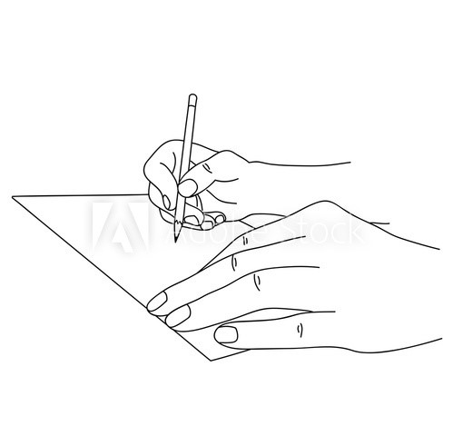
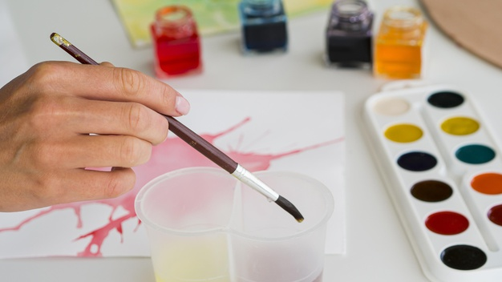

Welcome to Creations
{kind=link}

Sketching is a powerful process to use because it always helps discover the best ideas and solutions to a design problem. It is a difficult task to 'freestyle' a complex design out of midair without hashing out the details. This is why sketching will remain an important step in the design and development process.
{kind=link}

Painting allows children an educational opportunity that is also fun and exciting. Painting aids children acquire hand-eye coordination, an important skill in their age. This is developed while they learn to paint the parts that they see making sure their hand movement is at par with their vision.Painting aids your child develop mobility skills. Their hand muscles are being used, which allows them a scope to develop both mentally and physically.
{kind=link}
Glass painting is one of the most attractive art form with innumerable techniques followed. It gives the presence of a fairy-tale. It is also been referred to as a glass art or stained glass. Glass art amplifies its beauty when the light passes through it. Painting is been a mode of expression and creativity. Glass is one of the best mediums which can be used in contemporary and abstract art.
{kind=link}
Applying mehendi to the bride and the groom before the wedding, is one of the oldest Indian traditions. The ceremony, however, entails an elaborate application of mehendi designs on a bride’s hands and feet. As for the groom, a mere token of application of henna is a mark of good omen.As a wedding tradition, it is followed in many part of India as well as in neighbouring countries of Pakistan, Bangladesh and Nepal.